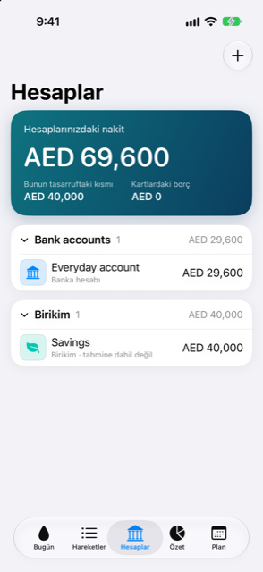

Kılavuz › Hesaplar, kartlar ve kişiler
Hesaplar sayfası
Bankalarınız, birikimleriniz, cüzdanlarınız, kartlarınız, kredileriniz ve kişileriniz tek listede.
Hesaplar, para tutan ya da para borcu olan her şeyi, daraltabileceğiniz bölümler halinde gruplandırarak listeler. Tüm mali durumunuzu gördüğünüz sayfadır: ne harcayabileceğiniz, kartların ne borcu olduğu ve her hesabın nerede durduğu.

Ne zaman kullanılır
- Nakdinize bir bakışta bakmak ve ne kadarının birikimde, ne kadarının kart borcunda olduğunu görmek için.
- Tek bir hesabı açıp türüne göre önemli sayıları okumak için.
- Yeni bir hesap veya kişi eklemek ya da ekstre veya ekran görüntüleri aktarmak için.
- Bir hesabı yeniden adlandırmak, logosunu değiştirmek, tahminleme içine almak veya dışarıda bırakmak ya da arşivlemek için.
Adım adım
- Hesaplar sekmesini açın. Üstteki kart, Hesaplarınızdaki nakit, banka hesaplarınızı, birikimlerinizi ve cüzdanlarınızı ana para biriminizde toplar; kart borcu ondan düşülmez. Rakamın altında Kartlarda borçlu olunanlar ve birikimleriniz sıfır değilse Bunun birikimde olan kısmı yer alır.
- Bölümlere doğru kaydırın. Her biri — Banka hesapları, Birikimler, Nakit ve cüzdanlar, Kredi kartları, Krediler, Yatırımlar, Varlıklar, Kişiler — kaç hesap barındırdığını ve tek bir toplam tek para biriminde hesaplanabiliyorsa o toplamı gösterir. Kullanmadığınız bölümler görünmez.
- Bir bölümün başlığına dokunarak daraltın veya açın.
- Açmak için bir satıra dokunun. Bankalar, birikimler, cüzdanlar, kartlar ve krediler bir kart olarak açılır. Yatırımlar pozisyonun sayfasını açar, Varlıklar aşamalı satın almayı açar, Kişiler kişiyi açar.
- Çevirmek için büyük karta dokunun. Ön yüz bakiyeyi (kartlar ve krediler için Sizin borcunuz) ve türüne ait rakamları gösterir. Arka yüz daha fazlasını, artı son birkaç hareketini gösterir.
- Kartın arka yüzünde, paranın nereye gittiğini görmek için Harcama'ya, çalışan bakiyeleriyle her şey için İşlemler'e veya hesabı değiştirmek için Ayrıntılar'a dokunun.
- Bir şey eklemek için artı düğmesine dokunun ve Hesap ekle, Kişi ekle, Ekstreleri içe aktar veya Ekran görüntülerinden güncelle seçeneklerinden birini seçin.
Bilmeniz iyi olur
- Her kartın arka yüzü türüne ait rakamları taşır: kart için ekstre ve son ödeme tarihleri ile bir sonraki fatura, kredi için taksit, sıklığı, kaç tanesi kaldığı ve kimin ödediği, banka için tahmindeki en düşük nokta ve son hareketler.
- Ayrıntılar'da hesabı yeniden adlandırabilir, logosunu seçebilir, tahminlemeye alabilir veya dışarıda bırakabilir ve onayın ardından hesabı arşivleyebilirsiniz. Kart ya da kredi dışındaki her şey için ayrıca tutulacak bir alt bakiye de belirleyebilirsiniz. Kart için fatura dönemini ayarlarsınız. Arşivlenen hesap geçmişini korur ama formlardan ve tahminlemeden kaybolur.
- Bir bölümün toplamı yalnızca tek para birimi kapsıyorsa görünür — para hesaplarında, içindeki her hesap aynı para birimini kullanıyorsa; yatırımlarda, değerleri hesaplanabiliyorsa. Üstteki karttaki N hesap dışarıda bırakıldı: döviz kuru yok uyarısı, başka para birimindeki bir hesabın dönüştürülemediğini söyler.
- Başka para birimindeki bir hesap için, henüz bir kur bilinmiyorsa hesap formu sizden bir kez döviz kuru ister. Bir kur girdiğiniz gün sizinki kazanır; bir sonraki yenilemede daha yeni getirilen bir kur onun yerini alır.
İlgili
Anlaşılmayan ya da eksik bir şey mi var? support@raveniq.ai adresine yazın ve hangi sayfa olduğunu belirtin.